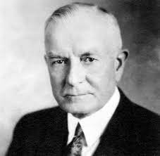

Thomas John Watson Sr. (February 17, 1874 – June 19, 1956) was an American businessman who served as the chairman and CEO of IBM. He oversaw the company's growth into an international force from 1914 to 1956. Watson developed IBM's management style and corporate culture from John Henry Patterson's training at NCR. He turned the company into a highly effective selling organization, based largely on punched card tabulating machines. A leading self-made industrialist, he was one of the richest men of his time and was called the world's greatest salesman when he died in 1956.
| Date | Event |
|---|---|
| 1874 AD | Born in Campbell, New York |
| 1914-1956 AD | Work as chairman and ceo of IBM |